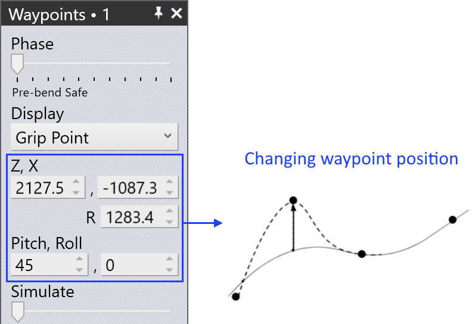
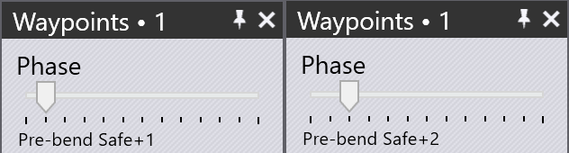

จุดทางเดิน
ภาพรวม
การเคลื่อนไหวแต่ละครั้งของ BendMaster ประกอบด้วย จุดทางเดิน ซึ่งผ่านทีละจุด จุดทางเดินทั้งหมดของการเคลื่อนไหวถูกกำหนด โดย TecZone แต่ส่วนใหญ่สามารถปรับได้ จุดที่ เกี่ยวข้องโดยตรงกับการติดตามในระหว่างกระบวนการดัดงอไม่สามารถเปลี่ยนแปลงได้ การตั้งค่าต่างๆ ที่ใช้ในการควบคุมจุดทางเดินมีรายการดังนี้:
-
เปลี่ยนตำแหน่งของจุดทางเดิน
-
แทรกจุดทางเดินใหม่หรือลบจุดทางเดินที่มีอยู่
-
ปรับคุณสมบัติการเคลื่อนไหวเช่นความเร็วและการสอดแทรก
-
เพิ่มจุดทางเดินใหม่ที่ตำแหน่งที่ต้องการ
เพื่อเข้าถึงแผง จุดทางเดิน:
-
คลิกโดยตรงที่ราวหุ่นยนต์
-
คลิกลิงก์ Waypoints จากแผง Pickup, แผง Bend, แผง Regrip หรือแผง Deposit
-
คลิกลิงก์จุดทางเดินในแผง RG-Stations ใดๆ


แผง จุดทางเดิน

แผงจุดทางเดินทั่วไปแสดงอยู่ข้างๆ:
-
แถบเลื่อน Phase แสดงการเคลื่อนไหวทีละขั้นตอนของจุดทางเดิน แต่ละ เฟสสะท้อนถึงการทำงานของหุ่นยนต์เฉพาะอย่างเช่น pickup, bend, regrip และ deposit
-
ใช้ตัวเลือก Display เพื่อดู:
-
grip point
-
wrist point
-
robot axes
-
-
ตำแหน่งและมุมของข้อมือหรือตัวจับแสดงและสามารถแก้ไขได้ หาก เลือกแกนหุ่นยนต์ ค่าแกนหุ่นยนต์จะแสดงและสามารถแก้ไขได้
-
ร่องรอยสีเหลืองแสดงเส้นทางจากขั้นตอนก่อนหน้าไปยังขั้นตอนนี้ และจากขั้นตอนนี้ ไปยังขั้นตอนถัดไป (ดูภาพด้านล่าง) สามเหลี่ยมเล็กๆ 3 อันระบุ พิกัด X และ Y ในพื้นที่ของหุ่นยนต์ (ข้อมือหรือตัวจับ)
-
แถบเลื่อน Simulate ใช้เพื่อย้ายการจำลองจาก เฟสก่อนหน้าไปยังเฟสถัดไป หากอยู่ตรงกลาง นั่นคือ เฟสจริงที่เรากำลังแก้ไข
-
การตั้งค่า Interpolate ใช้เพื่อสลับระหว่าง การสอดแทรกแบบเส้นตรงและแบบเน้นแกน
-
การตั้งค่า Speed และ Rounding ถูก ใช้เพื่อแก้ไขการตั้งค่าความเร็วและความแม่นยำสำหรับขั้นตอนนี้
-
ฟิลด์ Regrip stations ใช้เพื่อเปลี่ยนตำแหน่งของสถานีจับใหม่ ตามแกนของมัน
-
ตัวเลือก Insert ใช้เพื่อสร้างจุดทางเดินใหม่โดยการป้อนค่า ใหม่ จุดทางเดินที่เพิ่มใหม่สามารถลบได้ด้วยตัวเลือก Remove
-
ใช้ปุ่ม Prev และ Next เพื่อไปยัง ขั้นตอนถัดไปหรือก่อนหน้า (หรือคุณยังสามารถใช้ปุ่มลูกศรซ้ายและขวา) การคลิกปุ่ม Next จะแสดงแต่ละขั้นตอนในเฟส เมื่อสิ้นสุดเฟส แผงจุดทางเดินที่สอดคล้องถัดไปจะแสดง
คุณสมบัติของจุดทางเดิน
ขึ้นอยู่กับสถานะของกระบวนการ จุดทางเดินแต่ละจุดได้รับชุดของแอตทริบิวต์ เกี่ยวกับชนิดของการสอดแทรก ความเร็ว และความแม่นยำของการเคลื่อนไหว หากจำเป็น แอตทริบิวต์เหล่านี้สามารถเปลี่ยนแปลงได้
การตั้งค่าเหล่านี้ถูกควบคุมในส่วนขั้นสูงของแผงจุดทางเดิน
| ประเภท Interpolate | คำอธิบาย |
|---|---|
Linear |
การเคลื่อนไหวแบบเส้นตรงของ TCP ตามเส้นทาง |
Axis |
การเคลื่อนไหวจากตำแหน่งเริ่มต้นไปยังตำแหน่งสิ้นสุด
เร็วที่สุดเท่าที่จะเป็นไปได้ โดยไม่คำนึงถึงเส้นทาง |
| ประเภท Speed | คำอธิบาย |
|---|---|
Max. |
ความเร็วสูงสุด |
Fast |
75% ของความเร็วสูงสุด |
Medium |
50% ของความเร็วสูงสุด |
Reduced |
30% ของความเร็วสูงสุด |
Slow |
20% ของความเร็วสูงสุด |
| ประเภท Rounding | คำอธิบาย |
|---|---|
Max. |
การปัดเศษเริ่มที่ 50% ของความยาวเส้นทางที่สั้นกว่า |
Large |
การปัดเศษเริ่มที่ 35% ของความยาวเส้นทางที่สั้นกว่า |
Medium |
การปัดเศษเริ่มที่ 20% ของความยาวเส้นทางที่สั้นกว่า |
Reduced |
การปัดเศษเริ่มที่ 10% ของความยาวเส้นทางที่สั้นกว่า |
Fine |
การปัดเศษเริ่มที่ 5% ของความยาวเส้นทางที่สั้นกว่า |
Exact |
จุดสอบเทียบเข้าใกล้อย่างแน่นอนโดยไม่มีการทับซ้อน |

-
ความยาวเส้นทางระหว่างจุดทางเดินและจุดสิ้นสุด
-
ความยาวที่ดำเนินการ
-
ความยาวเส้นทางระหว่างจุดเริ่มต้นและจุดทางเดิน
-
จุดทางเดิน 3 (จุดสิ้นสุด)
-
จุดทางเดิน 2 (จุดปัดเศษ)
-
จุดทางเดิน 1 (จุดเริ่มต้น)
แสดง จุดทางเดิน
เมื่อชิ้นส่วนดัดงอเตรียมพร้อมแล้ว จุดทางเดินทั้งหมดจะถูกคำนวณโดยอัตโนมัติสำหรับ แต่ละเฟสการเคลื่อนไหว จุดเหล่านี้สามารถจำลองทีละเฟสด้วย คำอธิบายที่สอดคล้องกัน

ภาพด้านล่างแสดงเฟสจุดทางเดินของการดัดงอครั้งแรก (ในมุมมองด้านข้าง):

แก้ไข จุดทางเดิน
ตำแหน่งของจุดทางเดินสามารถเปลี่ยนแปลงได้หากจำเป็น ตัวอย่างเช่น เพื่อป้องกันการเคลื่อนที่ ข้ามแกน
ในบรรดาด้านอื่นๆ ที่เกี่ยวข้องกับการหลีกเลี่ยงการชน จุดทางเดินที่ไม่พึงประสงค์สามารถ กำจัดได้หรือสามารถเพิ่มจุดทางเดินใหม่ได้
-
เมื่อเปลี่ยนตำแหน่งจุดทางเดินที่มีอยู่ TecZone จะแสดงข้อความเตือน คลิก OK เพื่อดำเนินการเปลี่ยนจุดทางเดินต่อ

-
การคลิกปุ่ม Insert จะเพิ่มจุดทางเดินใหม่


-
จุดทางเดินที่เพิ่มใหม่จะถูกระบุด้วย +1,+2,ฯลฯ ในชื่อเฟสดังแสดงด้านล่าง:

จำลอง จุดทางเดิน
โดยค่าเริ่มต้นแถบเลื่อน simulate อยู่ในตำแหน่งกลาง การเคลื่อนไหวของหุ่นยนต์จากจุดทางเดินหนึ่งไปยังอีกจุดหนึ่งจำลองอย่างราบรื่น โดยใช้แถบเลื่อนนี้